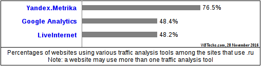
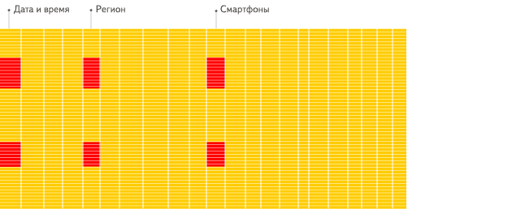
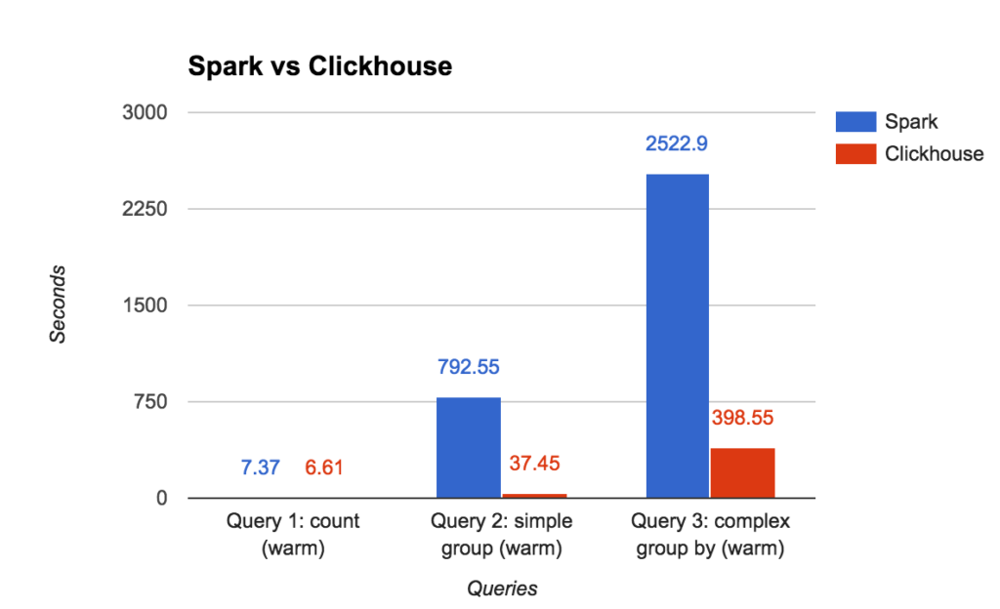
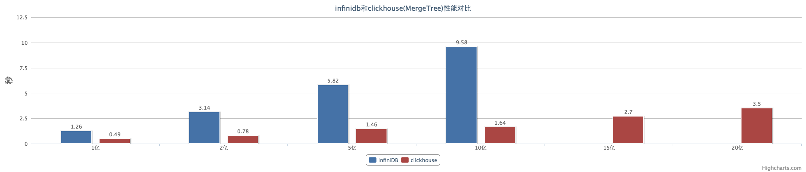
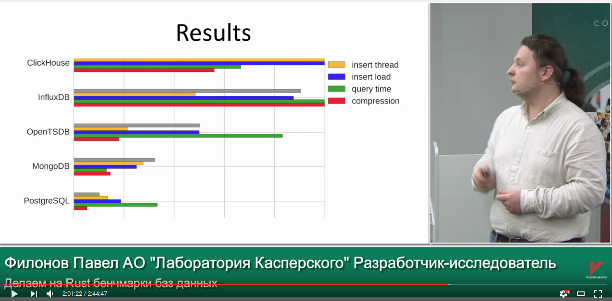

Data locality on disk (artistic view)
The main concern is data locality.

Alexey, developer of ClickHouse.
I work on data processing engine of Yandex.Metrica since 2008.
Yandex is one of the largest internet companies in Europe
operating Russia’s most popular search engine.
Yandex.Metrica (https://metrica.yandex.com/) is a service for web analytics.
Largest in Russia, second largest in the world (just after Google Analytics).

We are processing about ~25 billions of events (page views, conversions, etc).
We must generate and show reports in realtime.
Big data processing is not a problem.
The challenge is how to store data in that way to allow both:
- efficient ingestion of click stream in realtime;
- efficient generation of reports;
Let review our historical solutions first...
We have had about 50 predefined report types.
We create a table for each of them.
Each table has primary key in form of:
site_id, date, key -> aggregated statistics.
The data was inserted in mini-batches of aggregated deltas,
using ON DUPLICATE KEY UPDATE.
... but this just don't work.
The main concern is data locality.
We use HDD (rotational drives).
We cannot afford petabytes of SSDs.
Each seek is ~12 ms of latency,
usually no more than 1000 random reads/second in RAID array.
Time to read data from disk array is dependent on:
- number of seeks;
- total amount of data;
Example: read 100 000 rows, randomly scattered on disk:
- at least 100 seconds in worst case.
User won't wait hundred seconds for the report.
The only way to read data from disk array in appropriate amount of time is to minimize number of seek by maintaining data locality.
Fundamental problem:
Data is inserted almost in time order:
- each second we have new portion data for this second;
- but data for different web sites are comes in random order in a stream;
Data is selected by ranges for specified web site and date period:
- in ranges of completely different order;
MyISAM stores data in MYD and MYI files.
MYD contains data almost in order of insertion.
MYI contains B-tree index that maps a key to offset in MYD file.
Insertion of data is almost fine.
But selecting of data by range of primary key was non-practical.
Nevertheless, we made it work by:
- tricky partitioning;
- organizing data in few generations with different partitioning scheme;
- moving data between tables by scheduled scripts;
- report generation becomes ugly UNION ALL queries.
As of 2011 we was storing about 580 billion rows in MyISAM tables.
We were not satisfied by performance and maintenance cost:
Example: page title report loading time, 90% quantile was more than 10 seconds.
... After all, everything was converted and deleted.
(Specialized data structure, developed specially for aggregation of data and report generation).
To maintain data locality, we need
to constantly reordering data by primary key.
We cannot maintain desired order at INSERT time, nor on SELECT time;
we must do it in background.
Obviously: we need an LSM-tree!
Metrage: Metrica + Aggregated statistics.
We have created custom data structure for that purpose.
In 2010, there was no LevelDB.
We just got some insights from article about TokuDB.
Metrage is designed for the purpose of realtime data aggregation:
- row in Metrage table is custom C++ struct with update and merge methods.
Example: a row in Metrage table could contain a HyperLogLog.
Data in Metrage is aggregated:
- on insertion, in batches;
- during background compaction;
- on the fly, during report generation.
Everything was working fine.
The problem of data locality was solved.
Reports was loading quickly.
As of 2015 we stored 3.37 trillion rows in Metrage
and used 39 * 2 servers for this.
But we have had just ~50 pre-defined reports.
No customization and drill down was possible.
The user wants to slice and dice every report by every dimension!
... and we have developed just another custom data structure.
We had quickly made a prototype of so-called "report builder".
This was 2010 year. It was just simple specialized column-oriented data structure.
It worked fine and we got understanding, what the right direction to go.
We need good column-oriented DBMS.
This is how "traditional" row-oriented databases work:

And this is how column-oriented databases work:

Hypothesis:
If we have good enough column-oriented DBMS,
we could store all our data in non-aggregated form
(raw pageviews and sessions) and generate all the reports on the fly,
to allow infinite customization.
To check this hypothesis, we started to evaluate existing solutions.
MonetDB, InfiniDB, Infobright and so on...
No appropriate solutions were exist in 2010.
As an experimental project, we started to develop
our own column-oriented DBMS: ClickHouse.
In 2012 it was in production state.
In 2014 we re-lauched Yandex.Metrica as Metrica 2.
All data is stored in ClickHouse and in non-aggregated form
and every report is generated on the fly.
In Metrika 2 the user could create it's own report with
- custom dimensions, metrics, filters, user-centric segmentation...
- and to dig through data to the detail of individual visitors.
The main target for ClickHouse is query execution speed.
In Yandex.Metrika, users could analyze data for their web sites of any volume.
Biggest classifieds and e-commerce sites with hundreds millions PV/day are using Yandex.Metrika (e.g. ru.aliexpress.com).
In contrast to GA*, in Yandex.Metrika, you could get data reports for large web sites without sampling.
As data is processed on the fly, ClickHouse must be able to crunch all that pageviews in sub second time.
* in Google Analytics you could get reports without sampling only in "premium" version.
* If you want to try ClickHouse, one server or VM is enough.
We think ClickHouse is too good to be used solely by Yandex.
We made it open-source. License: Apache 2.0.
https://github.com/yandex/ClickHouse/
More than 100 companies is already using ClickHouse.
Examples: Mail.ru, Cloudflare, Kaspersky...
For well structured, clean, immutable events.
Click stream. Web analytics. Adv. networks. RTB. E-commerce.
Analytics for online games. Sensor and monitoring data. Telecom data.
OLTP
ClickHouse doesn't have UPDATE statement and full-featured transactions.
Key-Value
If you want high load of small single-row queries, please use another system.
Blob-store, document oriented
ClickHouse is intended for vast amount of fine-grained data.
Over-normalized data
Better to make up single wide fact table with pre-joined dimensions.
https://www.percona.com/blog/2017/02/13/clickhouse-new-opensource-columnar-database/
Ömer Osman Koçak:
«When we evaluated ClickHouse the results were great compared to Prestodb. Even though the columnar storage optimizations for ORC and Clickhouse is quite similar, Clickhouse uses CPU and Memory resources more efficiently (Presto also uses vectorized execution but cannot take advantage of hardware level optimizations such as SIMD instruction sets because it's written in Java so that's fair) so we also wanted to add support for Clickhouse for our open-source analytics platform Rakam (https://github.com/rakam-io/rakam)»
«结论：clickhouse速度更快！»
«In conclusion, ClickHouse is faster!»
http://verynull.com/2016/08/22/infinidb与clickhouse对比/

— we just cannot make it slower.
Yandex.Metrica must work.
Algorithmic optimizations.
MergeTree, locality of data on disk
— fast range queries.
Example: uniqCombined function is a combination of three different data structures, used for different ranges of cardinalities.
Low-level optimizations.
Example: vectorized query execution.
Specialization and attention to detail.
Example: we have 17 different algorithms for GROUP BY. Best one is selected for your query.
HTTP REST
clickhouse-client
JDBC
Python, PHP, Go, Perl, Ruby, Node.JS, R
Web UI: https://github.com/smi2/clickhouse-frontend
Redash, Zeppelin, Superset, Grafana, PowerBI - somewhat works
Web site: https://clickhouse.yandex/
Google groups: https://groups.google.com/forum/#!forum/clickhouse
Maillist: clickhouse-feedback@yandex-team.com
Telegram chat: https://telegram.me/clickhouse_en and https://telegram.me/clickhouse_ru (now with 403 members)
GitHub: https://github.com/yandex/ClickHouse/
+ meetups. Moscow, Saint-Petersburg... International meetups will be announced this year.
Thank you. Questions.
Itai Shirav:
«I haven't made a rigorous comparison, but I did convert a time-series table with 9 million rows from Postgres to ClickHouse.
Under ClickHouse queries run about 100 times faster, and the table takes 20 times less disk space. Which is pretty amazing if you ask me».
